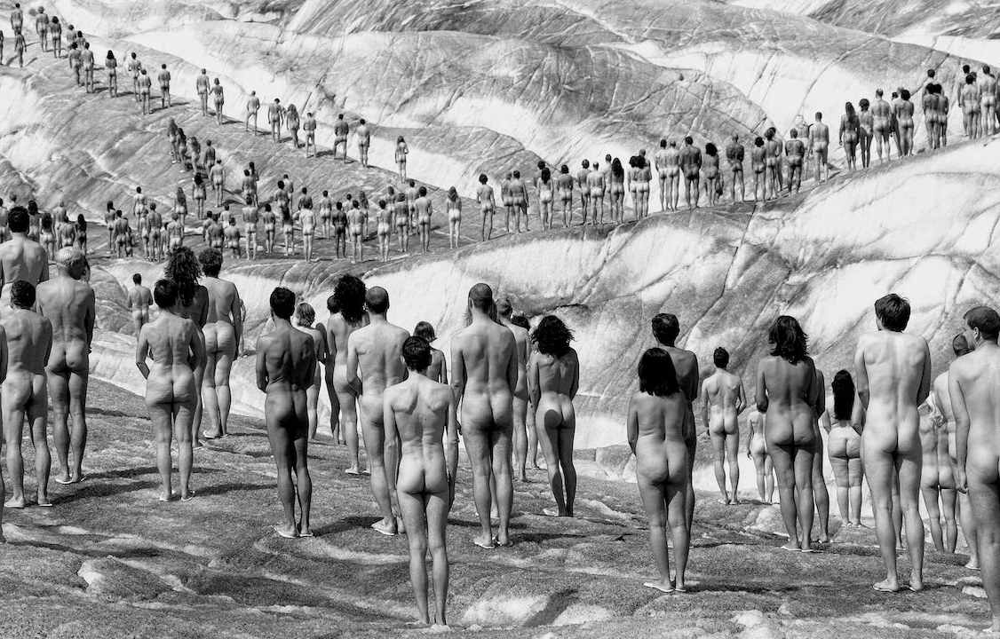

Article de recerca
Cooperació i vulnerabilitats en les negociacions contra el canvi climàtic
Experiment social que estudia la cooperació en les negociacions contra el canvi climàtic. Es va dur a terme amb metodologies de ciència ciutadana amb la participació de 324 persones a Barcelona. Els resultats de l'experiment, publicats a PlosOne, van revelar que les desigualtats en les negociacions sobre el canvi climàtic afecten més durament les persones, societats i organitzacions amb pocs recursos, que són, alhora, les que mostren nivells de cooperació més alts en termes relatius.

Imatge: Aletsch, Alps. Per Spencer Tunick.
Mentre es duia a terme la Convenció Marc de les Nacions Unides sobre el Canvi Climàtic a París, on es va adoptar el conegut «Acord de París» amb l'objectiu de reduir les emissions de gasos amb efecte hivernacle, vam realitzar un experiment social a Barcelona per estudiar la cooperació en les negociacions contra el canvi climàtic.
El canvi climàtic afecta tot l'ecosistema a escala global, però també té un impacte local en regions específiques. A banda de les conseqüències més òbvies a nivell ecològic, provocades, per exemple, per l'acidificació dels oceans [1] o l'augment dels incendis forestals [2], el canvi climàtic també afecta l'economia [3], des de la ineficiència en la generació d'energia fins als danys en infraestructures; i la salut pública [4], conseqüència del deteriorament de la qualitat de l'aire o de la propagació de malalties infeccioses. El canvi climàtic fins i tot provoca crisis migratòries [5] a causa de factors ambientals combinats amb altres factors polítics o econòmics.
Les conseqüències socials del canvi climàtic afecten la nostra societat de manera transversal, però són especialment dures per a les comunitats més vulnerables. En un escenari de fenòmens meteorològics extrems, les persones amb menys recursos són les més afectades. En la mateixa situació es troben els països amb processos d'industrialització precaris, que han generat menys gasos contaminants però que no poden fer front a l'impacte del canvi climàtic a causa de la seva fragilitat general, provocada per factors com la manca d'infraestructures sanitàries, d'habitatge o de transport. Aquest escenari desigual sorgeix en situacions en què els afectats no són els principals responsables de l'impacte climàtic, però en condicions de risc són els qui en pateixen les pitjors conseqüències.
Amb l'objectiu de reduir l'impacte antropogènic sobre el medi ambient, i particularment sobre l'escalfament global i, per tant, sobre les seves conseqüències climàtiques, cal impulsar una acció col·lectiva, aplicant la presa de decisions i els acords col·lectius a escala global per part de les administracions públiques i les organitzacions, i, alhora, és essencial que associacions, comunitats i individus cooperin a escala local amb l'objectiu de dur a terme una transformació que impliqui un canvi d'actituds i hàbits necessari per reduir l'impacte dels éssers humans sobre l'ecosistema.
Per entendre com els humans cooperen i col·laboren per prevenir les conseqüències del canvi climàtic, i particularment com les vulnerabilitats afecten aquest propòsit, vam dur a terme un experiment social que enfronta les persones al dilema de contribuir a un bé comú amb conseqüències a nivell col·lectiu i individual.
L'experiment
Vam traslladar el laboratori al carrer, en una situació d'interacció real entre persones —el festival de jocs DAU 2015, celebrat a Barcelona—, creant un escenari en què un grup format per sis persones contribueix a un fons comú per dur a terme accions ambientals que redueixin l'impacte del canvi climàtic. Cada persona disposa de dotacions diferents, d'entre 20 i 60 UM, cosa que provoca situacions de desigualtat econòmica entre elles. Periòdicament, durant deu rondes, cada persona contribueix amb 0/2/4 UM al fons comú amb l'objectiu de recollir 120 UM i dur a terme una acció contra el canvi climàtic —plantar arbres—, a més de l'objectiu personal de conservar els seus estalvis. En cas que el grup no assoleixi l'objectiu col·lectiu, l'acció ambiental no es duu a terme i cada persona perd els seus propis recursos privats. Això genera una situació de tensió entre la contribució necessària al fons comú i el càlcul que fa cada persona en funció de les contribucions de la resta de participants del grup. L'experiment, en què van participar 324 persones al llarg de 54 sessions, es va basar en el disseny proposat per Manfred Milinski i es va dur a terme amb metodologies de ciència ciutadana en espais oberts, on les persones interactuen en un entorn natural.
La cooperació afavoreix escenaris socialment desitjables
Els participants interactuen en un entorn de desigualtats econòmiques on la suma dels capitals individuals de cada sessió és la mateixa. Independentment del capital assignat a cada persona durant l'experiment, el grup va assolir l'objectiu col·lectiu a totes les sessions. En general, els alts nivells de cooperació i el comportament prosocial mostrat pels participants van ajudar a impulsar accions contra el canvi climàtic. Aquests resultats contrasten amb altres experiments en què els nivells de cooperació no van ser tan alts i, per tant, no va ser possible assolir l'objectiu col·lectiu; en conseqüència, no es van dur a terme accions pel bé comú.
Els motius pels quals tots els grups de participants van assolir l'objectiu en totes les sessions poden ser molt diversos. El motiu més evident podria ser un augment de la conscienciació pública sobre el canvi climàtic en les dates en què es va realitzar l'experiment, o bé el fet que l'experiment es va dur a terme fora d'un laboratori convencional i que els participants representen una població molt variada i, en general, sense coneixements previs de teoria de jocs o ciència del comportament.
Les persones més vulnerables mostren un comportament altament prosocial
En un context de desigualtat i alt nivell de cooperació, podem trobar diferències significatives entre els comportaments a escala individual en cada sessió. Els participants que representen els més rics en el context experimental contribueixen més en termes absoluts que les persones amb menys recursos. Tanmateix, si ens fixem en el capital proporcional aportat per cada persona, podem observar clarament que les persones en situació de vulnerabilitat són les que fan més esforços per contribuir al bé comú, aportant una proporció significativa del que tenen, cosa que crea una relació no igualitària i incrementa les desigualtats entre els rics i els desafavorits. Tant és així que, després de la participació en l'experiment, el desequilibri entre «rics» i «pobres» s'aprofundeix.
Aquest treball científic és una col·laboració amb Nereida Bueno-Guerra, Mario Gutiérrez-Roig, Carlos Gracia-Lázaro, Jesús Gomez-Gardeñes, Josep Perelló, Yamir Moreno, Anxo Sanchez i Jordi Duch, i s'ha publicat a PlosOne.
Referències
-
[1] Orr, J. et al. (2005).
«Anthropogenic ocean acidification over the twenty-first century and its impact on calcifying organisms».
Nature, 437(7059), 681.
-
[2] Abatzoglou, J. T., & Williams, A. P. (2016).
«Impact of anthropogenic climate change on wildfire across western US forests».
Proceedings of the National Academy of Sciences, 113(42), 11770-11775.
-
[3] Stern, N. et al. (2006).
««Stern Review: The economics of climate change»»
(Vol. 30, p. 2006). London: HM treasury.
-
[4] Haines, A., Kovats, R. S., Campbell-Lendrum, D., & Corvalán, C. (2006).
«Climate change and human health: impacts, vulnerability and public health»
Public health, 120(7), 585-596.
-
[5] Somini Sengupta.
«Climate Change Is Driving People From Home. So Why Don’t They Count as Refugees?»
Dec. 21, 2017.
The New York Times.